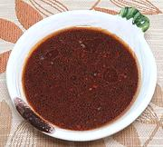

|
California Fusion DressingCalifornia | ||||
| Makes: Effort: Sched: DoAhead: |
1/2 cup * 4 min Yes |
A non-Korean recipe using all Korean ingredients - excellent for cucumbers, radishes, soy sprouts, and other robust ingredients. Comments | |||
|
2/3 1/4 1/4 1 1/2 |
t c c c T |
Salt Rice Vinegar Soy Sauce Sesame Oil, dark Chili Flake (1) |
Make - (4 min)
|